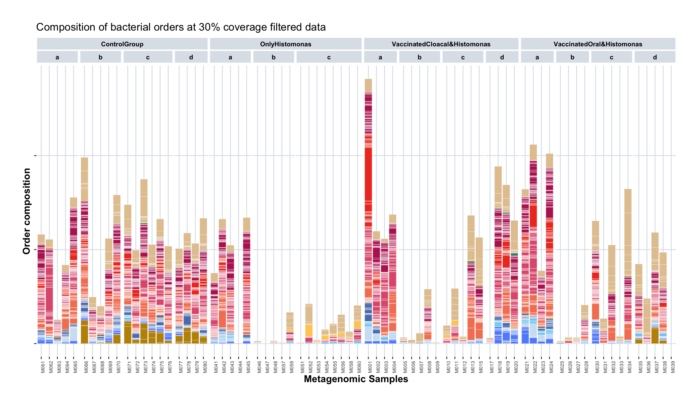
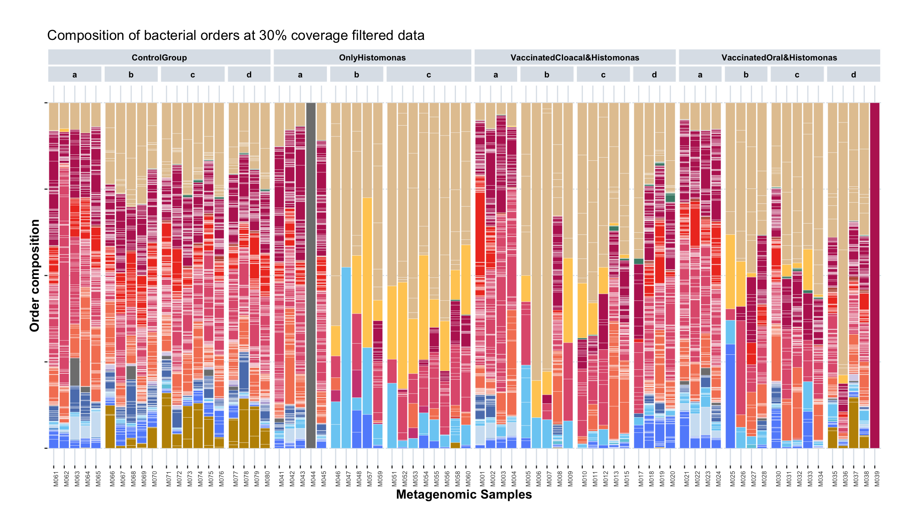
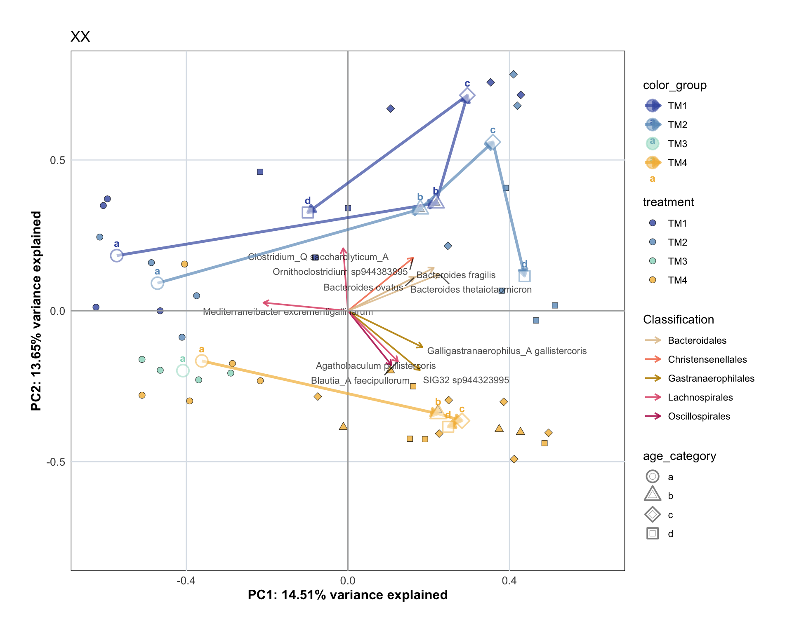
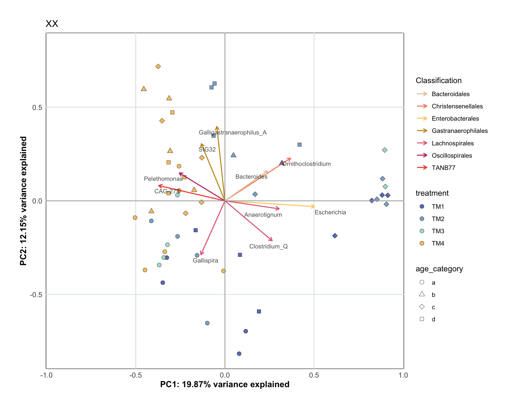
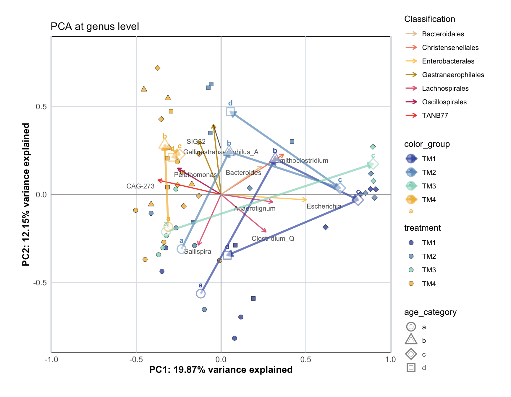
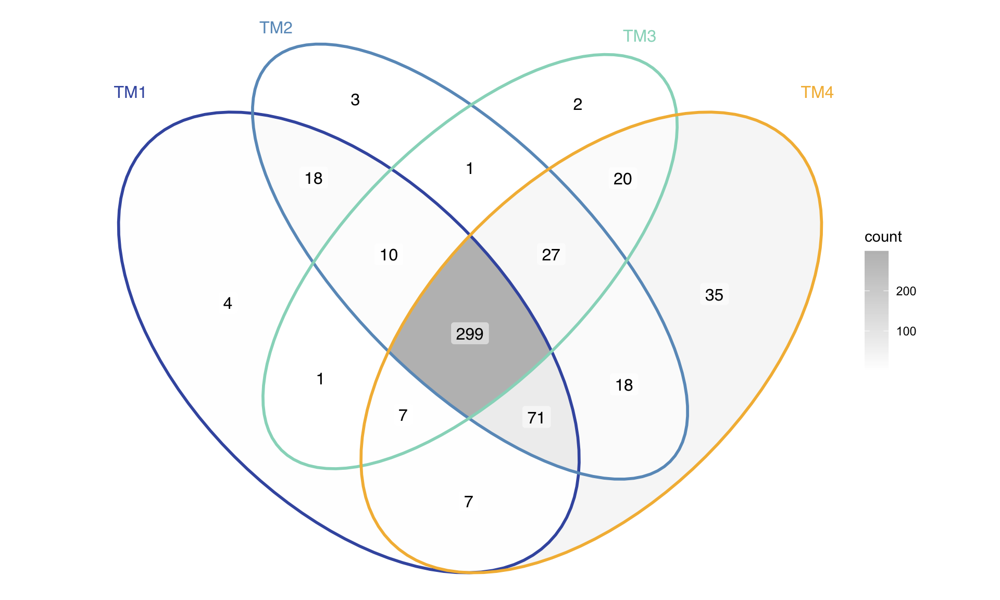
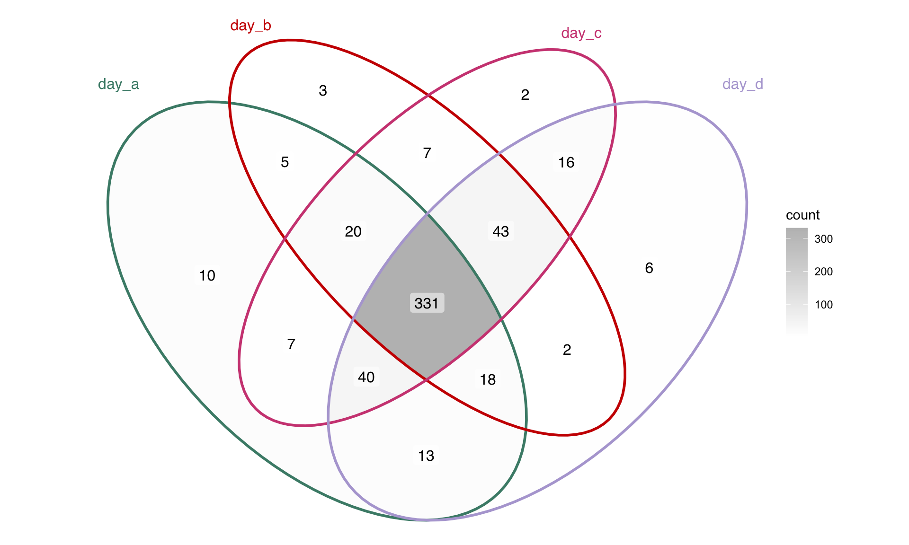

15 Beta Diversity - Macro Samples
load("data/macro/sample_metadata.Rdata")
load("data/macro/counts.Rdata")
load("data/micro/sample_metadata.Rdata")
load("data/MAG_catalogue/data.Rdata")
load("data/data_colors.Rdata")15.1 Prepare tidy tables for plotting
Create tidy tables for filtered genome counts (macro)
tidy_plot_genome_counts_filt_30_macro <- genome_counts_macro_filt_30 %>%
pivot_longer(-genome, names_to = "microsample", values_to = "count") %>%
left_join(genome_metadata, by = join_by(genome == genome)) %>%
left_join(sample_metadata_macro, by = join_by(microsample == sample)) %>%
filter(count > 0) %>%
mutate(phylum = factor(phylum, levels = phylum_level_vector),
order = factor(order, levels = order_level_vector))
tidy_plot_genome_counts_filt_30_macro_closed <- genome_counts_macro_filt_30 %>%
mutate_at(vars(-genome), ~ . / sum(.)) %>%
pivot_longer(-genome, names_to = "microsample", values_to = "count") %>%
left_join(genome_metadata, by = join_by(genome == genome)) %>%
left_join(sample_metadata_macro, by = join_by(microsample == sample)) %>%
filter(count > 0) %>%
mutate(phylum = factor(phylum, levels = phylum_level_vector),
order = factor(order, levels = order_level_vector))tidy_plot_genome_counts_filt_30_macro %>%
filter(treatment != "TM0") %>%
ggplot(aes(x = animal , y = count, fill = order)) +
geom_bar(stat="identity", colour="white", linewidth=0.1) + #plot stacked bars with white borders
scale_fill_manual(values = order_colors[-4], drop = FALSE) +
labs(x = "Metagenomic Samples", y = "Order composition",fill = "Read type") +
facet_nested(. ~ treatment_expl + age_category, scales = "free", space = "free") +
custom_ggplot_theme +
theme(axis.text.x = element_text(angle = 90, hjust = 1, size = 6),
axis.text.y = element_blank(),
legend.position = "none") +
ggtitle("Composition of bacterial orders at 30% coverage filtered data")
tidy_plot_genome_counts_filt_30_macro_closed %>%
filter(treatment != "TM0") %>%
ggplot(aes(x = animal , y = count, fill = order)) +
geom_bar(stat="identity", colour="white", linewidth=0.1) + #plot stacked bars with white borders
scale_fill_manual(values = order_colors[-4], drop = FALSE) +
labs(x = "Metagenomic Samples", y = "Order composition",fill = "Read type") +
facet_nested(. ~ treatment_expl + age_category, scales = "free", space = "free") +
custom_ggplot_theme +
theme(axis.text.x = element_text(angle = 90, hjust = 1, size = 6),
axis.text.y = element_blank(),
legend.position = "none") +
ggtitle("Composition of bacterial orders at 30% coverage filtered data")
15.2 Species level
The problem here is that at species level there are too many zeros and then we need to drop almost all samples from Histomonas treatment after day a.
df_wide <- tidy_plot_genome_counts_filt_30_macro_closed %>%
# Remove metadata
select(genome, microsample, count) %>%
# Make tidy df into wide df
pivot_wider(
names_from = genome,
values_from = count,
# Fill missing values with 0
values_fill = 0) %>%
# Remove taxa (columns) that are zero for all leftover samples (rows)
select(where(~ any(. != 0))) %>%
# scale each sample to 100 (= closure to 100, not required, but common)
mutate(across(-microsample, ~ . / rowSums(across(where(is.numeric))) * 100 )) %>%
# turn the column 'microsample'into the name of the rows of the df
column_to_rownames(var = "microsample")
# Remove taxa in few samples, and samples with few taxa
df_wide <- remove_samples_or_taxa(df = df_wide,
min_samples_per_taxon = 15,
min_taxa_per_sample = 20)Initial df: Rows (samples): 74 , Columns (taxa): 523
Removed: Rows (samples): 16 , Columns (taxa): 265
Resulting df: Rows (samples): 58 , Columns (taxa): 258 MACRO_sample_metadata <- sample_metadata_macro %>%
mutate(microsample = sample) %>%
select(microsample, animal, age_category, treatment, treatment_expl) %>%
mutate(sample_type = "MACRO")
pca_result <- perform_pca(df_wide, z_delete = TRUE)[1] "Zeros found"No. adjusted imputations: 4109
Rows (samples) removed after zero replacement: 11
Columns (taxa) removed after zero replacement: 0 p <- plot_pca(pca_result$pca_result,
samples_color_metadata = "treatment" ,
samples_shape_metadata = "age_category",
samples_color_value = treatment_colours_bright,
loadings_color_metadata = "order",
loadings_color_value = order_colors,
loadings_taxon_level = "species",
MACRO_sample_metadata, genome_metadata, order_colors,
custom_ggplot_theme)
p2 = p + ggtitle("XX")
p2
p <- plot_pca(pca_result$pca_result,
samples_color_metadata = "treatment" ,
samples_shape_metadata = "age_category",
samples_color_value = treatment_colours_bright,
loadings_color_metadata = "order",
loadings_color_value = order_colors,
loadings_taxon_level = "species",
scaling_factor_value = 1.0,
loadings_number = 10,
MACRO_sample_metadata, genome_metadata, order_colors,
custom_ggplot_theme,
add_centroids = TRUE)
p2 = p + ggtitle("XX")
p2
15.3 Genus level
Even here, the zero replacement needs to drop the samples with too few taxa.
genus_metadata <- genome_metadata %>%
select(domain, phylum, class, order, family, genus) %>%
distinct(genus, .keep_all = TRUE) %>%
mutate(genome = genus)
df_wide <- tidy_plot_genome_counts_filt_30_macro_closed %>%
# Remove metadata
select(domain, phylum, class, order, family, genus, genome, microsample, count) %>%
group_by(microsample, genus) %>%
summarise(genus_count = sum(count, na.rm = TRUE))%>%
filter(genus != "") %>%
mutate(count=genus_count) %>%
select(-genus_count) %>%
pivot_wider(names_from = genus,values_from = count,values_fill = 0) %>%
select(where(~ any(. != 0)) | where(is.character) | where(is.factor)) %>%
column_to_rownames(var = "microsample") %>%
mutate(across(where(is.numeric), ~ . / rowSums(across(where(is.numeric))) * 100))
# Remove taxa in few samples, and samples with few taxa
df_wide <- remove_samples_or_taxa(df = df_wide,
min_samples_per_taxon = 5,
min_taxa_per_sample = 5)Initial df: Rows (samples): 74 , Columns (taxa): 219
Removed: Rows (samples): 7 , Columns (taxa): 18
Resulting df: Rows (samples): 67 , Columns (taxa): 201 MACRO_sample_metadata <- sample_metadata_macro %>%
mutate(microsample = sample) %>%
select(microsample, animal, age_category, treatment, treatment_expl) %>%
mutate(sample_type = "MACRO")
pca_result <- perform_pca(df_wide, z_delete = TRUE)[1] "Zeros found"No. adjusted imputations: 2183
Rows (samples) removed after zero replacement: 16
Columns (taxa) removed after zero replacement: 49 p <- plot_pca(pca_result$pca_result,
samples_color_metadata = "treatment" ,
samples_shape_metadata = "age_category",
samples_color_value = treatment_colours_bright,
loadings_color_metadata = "order",
loadings_color_value = order_colors,
loadings_taxon_level = "genus",
sample_metadata = MACRO_sample_metadata,
genome_metadata = genus_metadata,
order_colors = order_colors,
custom_ggplot_theme)
p2 = p + ggtitle("XX")
p2
p <- plot_pca(pca_result$pca_result,
samples_color_metadata = "treatment" ,
samples_shape_metadata = "age_category",
samples_color_value = treatment_colours_bright,
loadings_color_metadata = "order",
loadings_color_value = order_colors,
loadings_taxon_level = "genus",
sample_metadata = MACRO_sample_metadata,
genome_metadata = genus_metadata,
order_colors = order_colors,
scaling_factor_value = 1.5,
loadings_number = 10,
custom_ggplot_theme,
add_centroids = TRUE)
p2 = p + ggtitle("PCA at genus level")
p2
15.3.1 PERMANOVA
# Calculate Euclidean distance on CLR data
pca_animals_dist_matrix <- vegdist(pca_result$df_clr_dist, method = "euclidean")
# Make sure that filtered df and metadata have the same number & order of rows
pca_animals_metadata_adonis <- plot_data_stats_macro %>%
filter(microsample %in% rownames(pca_result$df_clr_dist)) %>%
arrange(match(microsample, rownames(pca_result$df_clr_dist))) %>%
select(microsample, animal, treatment, age_category)
all(pca_animals_metadata_adonis$microsample == rownames(pca_result$df_clr_dist))[1] TRUE# Run PERMANOVA
adonis2_result <- adonis2(
pca_animals_dist_matrix ~ treatment + age_category,
data = pca_animals_metadata_adonis,
permutations = 999,
by = "terms"
)
knitr::kable(adonis2_result)| Df | SumOfSqs | R2 | F | Pr(>F) | |
|---|---|---|---|---|---|
| treatment | 3 | 1386.531 | 0.1605485 | 3.672666 | 0.001 |
| age_category | 3 | 1712.619 | 0.1983067 | 4.536414 | 0.001 |
| Residual | 44 | 5537.063 | 0.6411448 | NA | NA |
| Total | 50 | 8636.212 | 1.0000000 | NA | NA |
# LOOP
treatments <- unique(pca_animals_metadata_adonis$treatment)
results_age <- map_dfr(treatments, function(trt) {
# Subset metadata and restore proper sample IDs
subset_meta <- pca_animals_metadata_adonis[
pca_animals_metadata_adonis$treatment == trt, ,
drop = FALSE
]
rownames(subset_meta) <- subset_meta$microsample
# Subset the distance matrix to those samples
subset_dist <- as.dist(as.matrix(pca_animals_dist_matrix)[
rownames(subset_meta),
rownames(subset_meta)
])
# Run PERMANOVA for age within this treatment
adonis_res <- adonis2(subset_dist ~ age_category, data = subset_meta, permutations = 999)
# Extract R² and p-value
data.frame(
Treatment = trt,
R2 = adonis_res$R2[1],
p_value = adonis_res$`Pr(>F)`[1]
)
})
results_age Treatment R2 p_value
1 TM1 0.5374383 0.00100000
2 TM2 0.4986288 0.00100000
3 TM3 0.5858182 0.06666667
4 TM4 0.2827991 0.0010000015.3.2 Species representative genomes overlap
group1 <- tidy_plot_genome_counts_filt_30_macro_closed %>%
filter(type_simple == "P", treatment == "TM1") %>%
pull(genome) %>%
unique()
group2 <- tidy_plot_genome_counts_filt_30_macro_closed %>%
filter(type_simple == "P", treatment == "TM2") %>%
pull(genome) %>%
unique()
group3 <- tidy_plot_genome_counts_filt_30_macro_closed %>%
filter(type_simple == "P", treatment == "TM3") %>%
pull(genome) %>%
unique()
group4 <- tidy_plot_genome_counts_filt_30_macro_closed %>%
filter(type_simple == "P", treatment == "TM4") %>%
pull(genome) %>%
unique()
venn_data <- list(
TM1 = group1,
TM2 = group2,
TM3 = group3,
TM4 = group4
)
# # Taxa unique to group1 only
# unique_group1 <- setdiff(group1, group2) # layer
# # Taxa unique to group2 only
# unique_group2 <- setdiff(group2, group1) # broiler
#
#
# # Filter once (layer/broiler + genomes of interest)
# filtered_group1 <- tidy_plot_genome_counts_filt_30_macro_closed %>%
# filter(type_simple == "P", animal_breed == "layer", genome %in% unique_group1)
#
# filtered_group2 <- tidy_plot_genome_counts_filt_30_macro_closed %>%
# filter(type_simple == "P", animal_breed == "broiler", genome %in% unique_group2)ggVennDiagram(
venn_data,
label = "count",
set_color = c(TM1 = "#4059AE",
TM2 = "#6A9AC3",
TM3 = "#97D8C4",
TM4 = "#F3B942") ) +
scale_fill_gradient(low = "white", high = "grey") #+
group1 <- tidy_plot_genome_counts_filt_30_macro_closed %>%
filter(type_simple == "P", age_category == "a") %>%
pull(genome) %>%
unique()
group2 <- tidy_plot_genome_counts_filt_30_macro_closed %>%
filter(type_simple == "P", age_category == "b") %>%
pull(genome) %>%
unique()
group3 <- tidy_plot_genome_counts_filt_30_macro_closed %>%
filter(type_simple == "P", age_category == "c") %>%
pull(genome) %>%
unique()
group4 <- tidy_plot_genome_counts_filt_30_macro_closed %>%
filter(type_simple == "P", age_category == "d") %>%
pull(genome) %>%
unique()
venn_data <- list(
day_a = group1,
day_b = group2,
day_c = group3,
day_d = group4
)
# # Taxa unique to group1 only
# unique_group1 <- setdiff(group1, group2) # layer
# # Taxa unique to group2 only
# unique_group2 <- setdiff(group2, group1) # broiler
#
#
# # Filter once (layer/broiler + genomes of interest)
# filtered_group1 <- tidy_plot_genome_counts_filt_30_macro_closed %>%
# filter(type_simple == "P", animal_breed == "layer", genome %in% unique_group1)
#
# filtered_group2 <- tidy_plot_genome_counts_filt_30_macro_closed %>%
# filter(type_simple == "P", animal_breed == "broiler", genome %in% unique_group2)ggVennDiagram(
venn_data,
label = "count",
set_color = c(day_a = "#498a77",
day_b = "#cc0100",
day_c = "#cf4a82",
day_d = "#b4a7d6") ) +
scale_fill_gradient(low = "white", high = "grey") #+